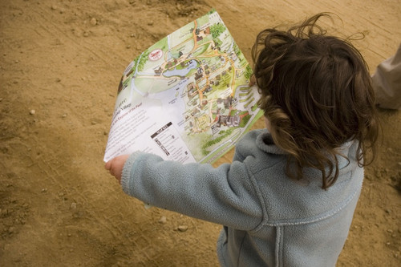

I geo-dati sono come un ordito per tessere città “smart” e la geo-ICT inonda di applicazioni l’ecosistema della città intelligente; la governance dei processi “intelligenti” si basa sulla cooperazione tra gli attori coinvolti secondo un modello a rete. Perché non pensare di inserire negli organismi d’indirizzo di ogni smart city -prima che per legge, come scelta di buon senso- la figura professionale del Geographic Information Manager?

L’idea del GIM è presa per analogia con l’energy manager, professione di cui si è incominciato a parlare nei primi anni ’80, dopo le note crisi petrolifere degli anni ‘70. Il modello seguito per questa -ormai radicata- professione potrebbe essere adattato al mondo delle Smart City, per sostenere in questo contesto l’uso consapevole dei geo-dati e delle relative tecnologie disponibili.
Potremmo identificare il Geographic Information Manager come un esperto di settore, il cui compito fondamentale sia quello di favorire l’incremento del livello di qualità e competenza tecnica all’interno del network che costruisce una comunità intelligente, nei riguardi delle tematiche legate alla capacità di fruire dei dati territoriali (spatial enablement), sia intesa rispetto alla disponibilità di queste informazioni, sia come abilità conseguite per il loro sfruttamento.
Tra settore energetico e quello dell’informazione geografica esistono ovviamente innumerevoli differenze. Mi sono lasciato però suggestionare da due caratteri comuni. Per entrambi gli ambiti –questo è il primo aspetto- i percorsi di studio che consentono di acquisire le conoscenze di base, nell’uno come nell’altro settore, possono essere diversi: la preparazione teorica è un prerequisito ma conta assai di più il successivo percorso di specializzazione, soprattutto on the job. La seconda caratteristica è la sensibilità culturale iniziale della classe dirigente del Paese nei confronti delle problematiche e delle opportunità di cui il primo è stato portatore, assai simile a quella mantenuta, almeno finora, nei riguardi delle istanze del settore dei dati geografici digitali.
Sappiamo che produzione e gestione dei dati geografici sono attività complesse, comportano costi consistenti; essi hanno potenzialità di riuso assai marcate e, infatti, sono i dati tra i più richiesti della PA: quelli disponibili hanno però un livello di fruibilità ancora insoddisfacente. Guardare alle informazioni geografiche come a una sorta di “forma di energia” può aiutare una comunità “smart” a comprendere meglio quanta ne produce, quanta ne utilizza, per che fini e –soprattutto- con quale “rendimento”, cioè qual è e a quanto ammonta la quantità che si spreca ecc., ecc.
Il ruolo dell’energy manager è stato introdotto per legge: la 10/1991, ha stabilito infatti che i soggetti (enti pubblici e privati) caratterizzati da consumi annui di energia al di sopra di una data soglia, debbano nominare un tecnico per “la conservazione e l’uso razionale dell’energia”. Tale norma è stata, a più riprese, ampliata e diffusa ad altre funzioni. Come in occasione del recepimento della direttiva 2006/32/CE, riguardante l’efficienza degli usi finali dell’energia e i servizi energetici: all’energy manager il legislatore ha affiancato l’esperto in gestione dell’energia (D.Lgs. 115/2008). Inoltre, questa seconda legge ha introdotto anche una procedura di certificazione volontaria, descritta in una norma tecnica, la UNI-CEI 11339:2009.
Lo scorso luglio, tale certificazione è stata resa obbligatoria (D.Lgs. 102/2014, “Attuazione della direttiva2012/27/UE sull’efficienza energetica”) sia nei riguardi dell’esperto in gestione dell’energia, con riferimento allo svolgimento di alcuni compiti, sia rispetto agli enti pubblici e privati indicati dalla legge 10/1991; essi, per continuare a beneficiare di riconoscimenti economici derivati da azioni di risparmio energetico adottate, dal 2016 dovranno nominare energy manager che abbiano acquisito la citata certificazione.
Un argomento da considerare –per l’idea del GI Manager- riguarda l’evoluzione delle modalità di gestione dell’elenco degli energy manager (non è un albo) e della formazione di questi professionisti. La legge del ‘91 si è limitata a stabilire che L’Agenzia per l’Energia (ENEA), dovesse provvedere -attraverso convenzioni con le Regioni- all’aggiornamento dei tecnici. L’introduzione della certificazione ha indotto il coinvolgimento di diversi organismi. Ovviamente, l’ENEA ha ampliato il proprio ruolo: attraverso la Federazione Italiana per l’uso Razionale dell’Energia, FIRE, iniziativa di cui è stata promotrice, gestisce dal 1992 la rete degli energy manager, su incarico del Ministero dello Sviluppo Economico. Più recentemente (2008), FIRE ha costituito una struttura interna dedicata alla certificazione delle competenze degli Esperti in Gestione dell’Energia: il SECEM (Sistema Europeo per la Certificazione in Energy Manager). Inoltre, il D.Lgs. del luglio scorso, assegna ad Accredia, organismo nazionale di accreditamento, la predisposizione degli schemi di certificazione e accreditamento e all’Ente Italiano di Normazione, UNI, l’elaborazione delle norme tecniche per la certificazione, indicando agli stessi di avvalersi della collaborazione del Comitato Termotecnico Italiano, di GSE SpA (Gestore dei Servizi Energetici, società del Ministero dell’Economia e delle Finanze), oltre che dell’ENEA.
Ma se i tempi necessari per vedere all’opera un GIM fossero dell’ordine di un decennio, come avvenuto per l’energy manager, non potremmo certamente essere soddisfatti. Inoltre, come si può appurare consultando i siti dedicati all’argomento, l’introduzione di questa figura per legge, seppur sostenuta da associazioni di settore, non ha garantito di per sé una sua diffusione consapevole e sempre efficace. Negli anni immediatamente successivi l’entrata in vigore della norma istitutiva, le aziende e le pubbliche amministrazioni interessate da questa normativa provvidero all’assegnazione di questi compiti affidandoli prevalentemente a tecnici già in staff alla struttura. Gli energy manager della prima ora erano tutti esperti nella materia? No, affatto. La legge non forniva indicazioni sul CV richiesto; inoltre, in molti ambienti l’attenzione dei vertici manageriali al tema energetico era scarsa, la disposizione normativa accolta come un’incombenza burocratica e, comunque, i professionisti competenti non erano molti.
Esistono però alcuni elementi che meritano di essere considerati. Rispetto al contesto degli anni ’80, oggi si può prevedere che il processo di promozione del GIM possa essere innescato e sostenuto facendo leva sulla partecipazione attiva di comunità in Rete, coalizzando nello specifico la comunità geomatica. E’ anche possibile prevedere di assegnare, per esempio, all’AgID un ruolo analogo a quello ricoperto da ENEA o, più precisamente, dalla FIRE. L’Agenzia per l’Italia Digitale è la naturale organizzazione cui fare riferimento per la gestazione della figura del GIM. Mi pare questa un’ipotesi che non dovrebbe suscitare perplessità o contrarietà nell’ambiente geomatico: l’Agenzia è l’organo deputato per l’applicazione delle strategie per la crescita digitale e, tra i diversi compiti, è impegnata per lo svolgimento del programma nazionale per la cultura, la formazione e le competenze digitali; ha coordinato il Comitato per le Regole Tecniche sui Dati Territoriale, best practice in termini di cooperazione interistituzionale ed ha riavviato recentemente i gruppi di lavoro tematici. Last but not least, in seno ad AgID è presente il comitato tecnico delle Comunità intelligenti, organismo che supporta le attività dell’Agenzia riguardanti questa materia tramite l’operato di quattro gruppi di lavoro, ognuno con specifici obiettivi.
L’iniziativa FIRE, si legge sul sito della federazione, ha avuto origine dalla convergenza di diverse esperienze associative, raccoglie soci che rappresentano tutti i comparti del settore e opera attraverso un nucleo di supporto fornito dall’ENEA. Trasferendo tale descrizione alla “Federazione Italiana per l’Informazione Geografica”, non si dovrebbe creare l’ennesima associazione di questo settore: essa dovrebbe fungere da tavolo inclusivo di supporto ai GIM, in sintonia con gli indirizzi indicati dalle politiche per lo sviluppo delle competenze digitali, di cui AgID è il riferimento operativo.
I temi sui quali dovrebbe essere competente un GIM e per i quali, quindi, dovrebbe essere fornito supporto formativo, andrebbero approfonditi. Ne segnalo giusto due. L’applicazione del concetto “spatial enablement” al processo di una Smart City comporta l’esigenza di misurare il grado di aderenza a tale paradigma, per esempio valutare la capacità di PA, cittadini e imprese nell’uso dei dati territoriali per organizzare le loro attività e i modi di comunicare. La conoscenza dei punti di forza e dei limiti consente di definire le azioni da perseguire, le quali dovranno essere monitorate per seguirne l’attuazione, intervenendo per correggere eventuali scostamenti dai risultati attesi.
All’interno di questo tema, un GIM dovrà tenere sotto controllo e proporre azioni per migliorare la capacità di implementazione della direttiva INSPIRE, in sintonia con l’INSPIRE Maintenance and Implementation Framework approntato dalla Commissione Europea.
Il lavoro del GIM può far sì che la città -come “essere vivente”- impari a organizzare le informazioni geografiche tenendo presente i costi per generarle e permettendone l’utilizzo ogniqualvolta serve, a ogni utilizzatore, impegnandosi -e ingaggiando la città- per creare cicli d’informazioni geografiche sostenibili.
Il suo operato può inoltre avere degli effetti collaterali estremamente positivi. Da un lato generare una forte domanda per nuove professionalità legate proprio al mondo della GI, inducendo quindi la definizione di programmi formativi specifici sia in ambito accademico, sia post laurea. D’altro canto, le soluzioni individuate dai Big GIM potrebbero fungere da volano, stimolando grandi opportunità di crescita del mercato Geo-ICT.
foto di troybthompson
I contenuti potrebbero non essere più adeguati ai tempi!

2 Trackback(s)